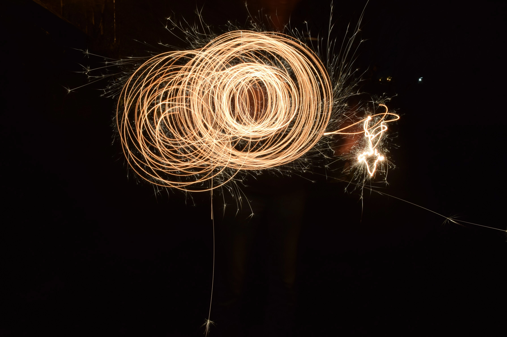
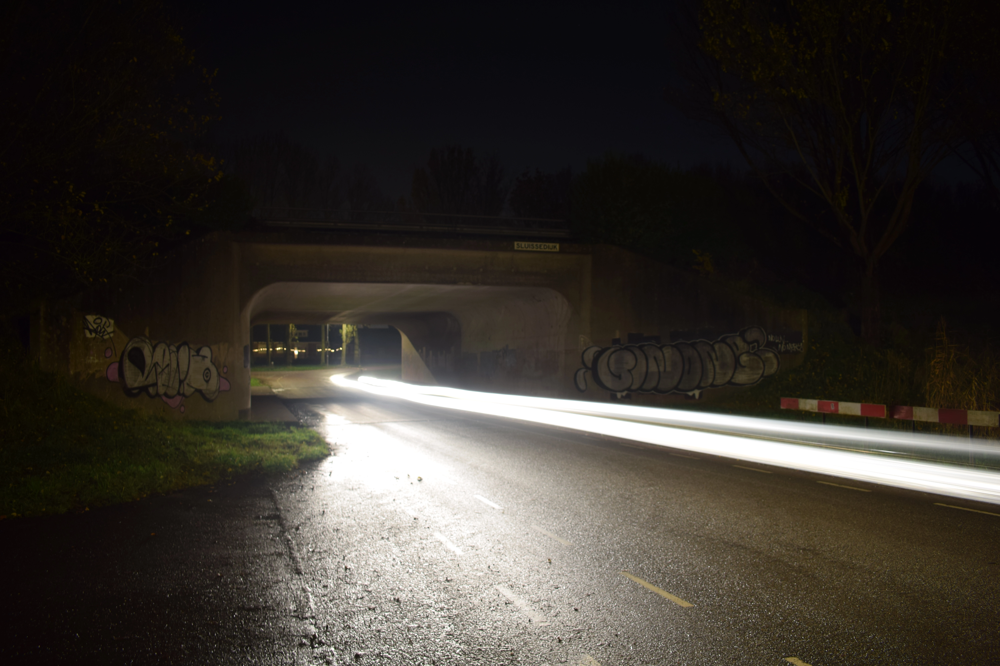
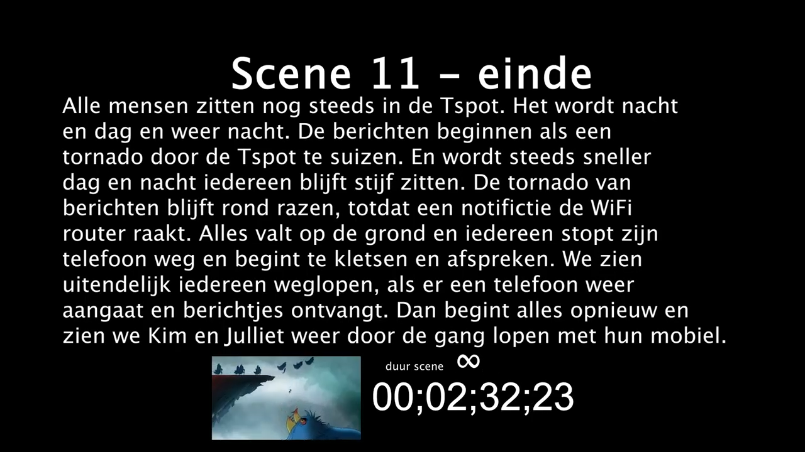

Experimenten
Om jezelf te kunnen ontwikkelen moet je experimenteren met het onderwerp, of het nu een filmtechniek is of een manier van ontwerpen. Alle experimenten die ik doe hou ik bij op deze pagina, zodat er een mooi archief ontstaat van probeersels.
Sparkling Waves
12-01-2023
Foto serie waar ik sterretjes vertraagd laat zien.
Flowing Colors
15-12-2022
Foto serie waar ik gekleurde lampen op een abstracte manier weergeef.
Abstract Lightning

08-12-2022
Foto serie waar ik foto's heb gemaakt met een lange sluitertijd terwijl ik de camera beweeg.
Dark Infrastructure
01-12-2022
Foto serie van de omgeving rond mijn huis met experimentele instellingen
Bulma
09-11-2022
Eerste keer het gebruik van een CSS framework, Bulma.
Portfolio v3
09-10-2022
Eerste poging tot de mobile first manier van web development
Portfolio v2
25-09-2022
Dit is de eerste keer dat ik serieus met CSS bezig ben geweest.
Portfolio v1
20-09-2022
Dit is de eerste HTML website die ik ooit gemaakt heb.
MIJN concept 2
22-03-2022
Gesprek aan het begin van de film MIJN, versie 2
Mok test
22-03-2022
Test hoe je veilig een mok kan goien op iemand
MIJN concept 1
23-02-2022
Gesprek aan het begin van de film MIJN, versie 1
A Streetcar Named Desire

10-02-2022
Een filmpje waarin we een andere film nadoen, met dezelfde feel en stijl.
Delfshaven
17-02-2022
Een combinatie van een anti-reclame en een jaren 80 astetic.
Sound design 2
12-11-2021
Theorie over sound design toepassen in een kort filmpje
Sound design 1
12-11-2021
Hoe kun je emotie obwekken door geluiden, ipv door heftige beelden?
Kapitalisme
07-07-2021
Het thema kapitalisme in een abstracte film die herhaalt, voor een tentoonstelling over kunst
Spiegel test 2

16-02-2021
Hoe ga je met een camera door een speigel heen? Deze keer met wat meer effecten
Spiegel test 1

16-02-2021
Hoe ga je met een camera door een speigel heen?
Toekomst
16-02-2021
Hoe ziet de toekomst eruit een hoe kun je dat duidelijk maken aan je publiek?
Normaal, maar dramatisch
20-11-2020
Hoe kun je van een normale bezigheid iets heel dramatisch maken?
Midas effect
26-10-2020
Met basis technieken een object van soile goud maken
Kunstlab Gravity Falls

15-12-2019
Filmpje die ik met een vriend gemaakt heb toen we geen inspiratie konden opbrengen om kunst te maken en we maar gewoon zijn gaan filmen.
Lampen in rook
30-06-2019
Experimenten met licht en rook effecten, waarvan ik een verhaal heb gemaakt.
Video Script
16-12-2018
Scenario voor een film uitgwerkt met tijden, om te kijken of het film proces zo sneller is.
Eitje bakken
10-06-2018
Filmpje die ik gemaakt heb om een edit techniek uit te proberen.
Halloween Projectie
16-10-2017
Voor halloween heb ik een projectie gemaakt die paste bij een dropping die bij mij in de buurt was.
project MHG in beeld
2015 - 2018
Webserie waarin ik ging zeilen en dat documenteerde, om zo reclame te maken een meer leden te kunnen werven voor de zeilvereniging.